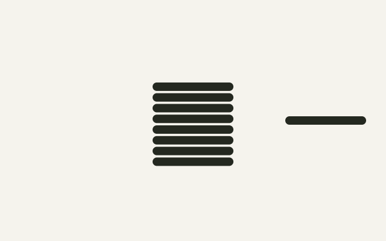
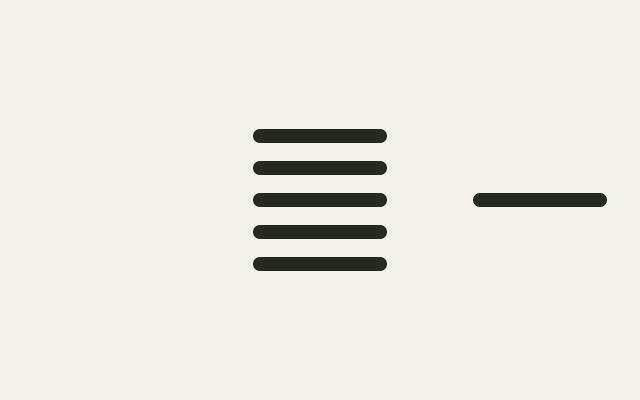

15 November 2026 · Original review
Zebra crossings now keep clear paper between their stripes when the view foreshortens them. Stripe groups are centred across the road and keep at least one metre from each kerb. If fewer than three readable stripes fit, the crossing is omitted. The restored uniform roof hatching remains in place; roof outlines are a deferred investigation.
A 12 m road at 1:1000, 20° tilt, 0.35 mm pen. Both samples use the real marking renderer. The neighbouring centre dash is unchanged. This enlargement shows spacing, not a physical print.


Vector samples: before · after. Rye context crops: before · after; the visible change there is small and partly occluded.
Spacing follows Detail and pen width with a physical floor of two pen widths. Stroke length is checked in projection. Unit tests cover regular and broad pens, three bearings, high Detail, shallow viewing angles and omission of unreadable groups.
Reviewed the two changed goldens (Amsterdam and Rye), six LOD sheets and their busiest close-ups for Mollis, Sapporo and Midtown at 1:500 and 1:1000, plus a Rye before-and-after close-up. The city sheets change very little: this is a local legibility correction, not a compositional redesign. Amsterdam loses two marking strokes and Rye one; other golden feature totals, counts and census are unchanged. Build and all 593 tests pass.
Before LOD report · After LOD report · Rye comparison against the unchanged pre-round-17 baseline (local generated files).
No physical prints or all 29 presets were checked. Visibility clipping can still hide individual stripes behind buildings or vehicles: the minimum group size is decided before that clipping. Shadow tone behind crossings retains its existing treatment.